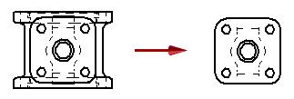

Set Drawing View Depth command
Use the Set Drawing View Depth command to clean up and simplify section views and broken-out section views. It is available on the shortcut menu of any type of high quality drawing view, but not draft quality drawing views. You can define a visible display depth and apply a back clipping plane at that location to remove all geometry behind it.

Only one clipping plane can be applied to the drawing view at a time. You can adjust the location of the clipping plane so that more or less geometry is visible by selecting the Set Drawing View Depth command again and specifying a different view depth.
Methods for defining the drawing view depth
You can define the portion to be removed by:
-
Typing a value in the Depth box on the command bar.
-
Clicking in free space.
-
Locating a keypoint or a centerline annotation in a drawing view that is folded 90 degrees from the view to be clipped, and then clicking to define the display depth.
Note:This method defines an associative display depth that updates when the model changes.